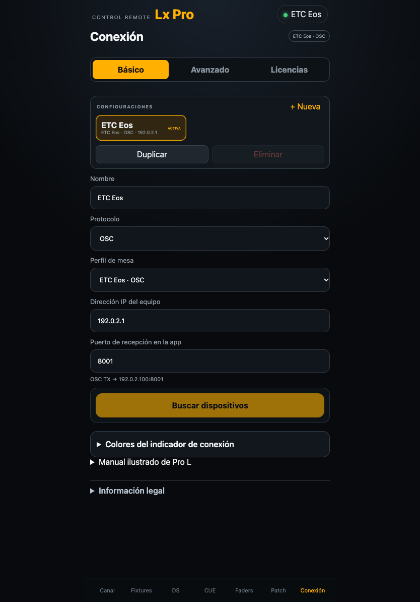
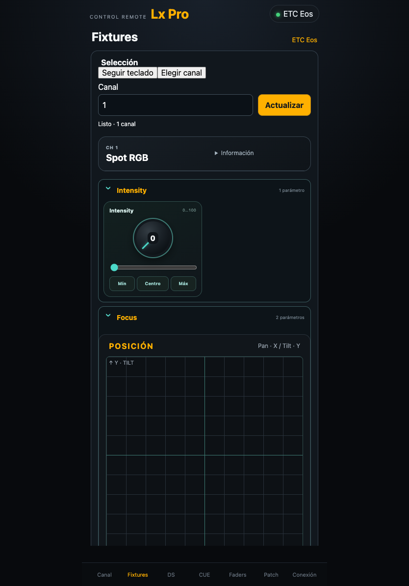
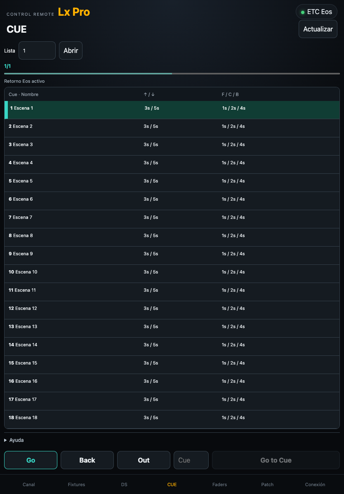

Configurar Eos y Pro L
- En Eos abre Setup → System → Show Control → OSC y habilita OSC RX y OSC TX. En la interfaz de red activa UDP Strings & OSC.
- Configura OSC UDP RX Port para recibir de Pro L. Como ejemplo, usa 8000.
- En Eos configura OSC UDP TX IP Address con la IP del móvil y OSC UDP TX Port con su puerto de recepción. El ejemplo utiliza 8001.
- En Pro L abre Conexión → Básico, selecciona OSC → ETC Eos, introduce la IP de Eos y fija Puerto de recepción en la app en 8001 para este ejemplo.
- En Avanzado → Puerto OSC del receptor, indica el puerto de entrada de Eos, 8000 en el ejemplo.

Elegir el transporte de lectura
En Conexión → Avanzado → Lectura de parámetros, selecciona Automática para usar UDP con respaldo TCP, Solo UDP o Solo TCP. Para TCP ajusta el puerto y el formato de trama a la configuración de Eos. El ejemplo para TCP estándar es 3032 con el formato seleccionado en la mesa. Si habilitas Third Party OSC en Eos y utilizas 3037, selecciona OSC 1.1 · SLIP.
Comprueba la recepción de órdenes con un canal conocido. Consulta el mismo canal en Fixtures y abre CUE para comprobar la lectura y el retorno por separado.
Canal y grupos
Utiliza el teclado del perfil Eos para preparar la selección y el nivel y confirma la orden con Enter. Los grupos rápidos aplican los tiempos mediante Sneak. Grand Master actúa sobre el maestro global de Eos. Clear All libera valores manuales y los playbacks pueden seguir dando salida.
Fixtures y Patch
En Fixtures activa Seguir teclado para usar el canal seleccionado, o pulsa Elegir canal e introduce el número. Usa Leer o Actualizar para consultar sus parámetros antes de ajustarlos. Si faltan datos, revisa el retorno OSC y la lectura UDP o TCP. En Patch, pulsa Actualizar patch para consultar los datos de la mesa y comprueba canal, parte y dirección antes de confirmar una edición en Eos.

Faders
Las tiras controlan los submasters 1–20. Comprueba el número y la etiqueta antes de mover un fader. Mantén y suelta el pulsador para una acción momentánea según el comportamiento del submaster.
CUE y Direct Selects
En CUE introduce el número de lista y carga sus cues. Pulsa Actualizar tras cambiar la lista en la mesa. Toca una fila para elegir el destino y comprueba su número antes de ejecutar el salto. Pulsa Go to Cue para ejecutar el salto. Go avanza en la lista abierta. Back detiene el fundido en curso o retrocede si ha terminado. Out envía Go to Cue Out.
En DS elige el tipo de Direct Select, cambia de página y espera a que lleguen los botones de la mesa. Toca una casilla ocupada para ejecutar su selección.

Resolver problemas
- La mesa no responde al teclado.
- Revisa la IP de Eos, OSC RX, el puerto UDP de entrada y la interfaz de red.
- El teclado funciona y la app no recibe datos.
- Revisa OSC TX, la IP del móvil y la correspondencia entre el puerto de salida de Eos y Puerto de recepción en la app. En lectura TCP comprueba además puerto y trama.
- La lista de cues está vacía.
- Comprueba el número de lista, pulsa Actualizar y despliega Ayuda para consultar el contador de paquetes recibidos.